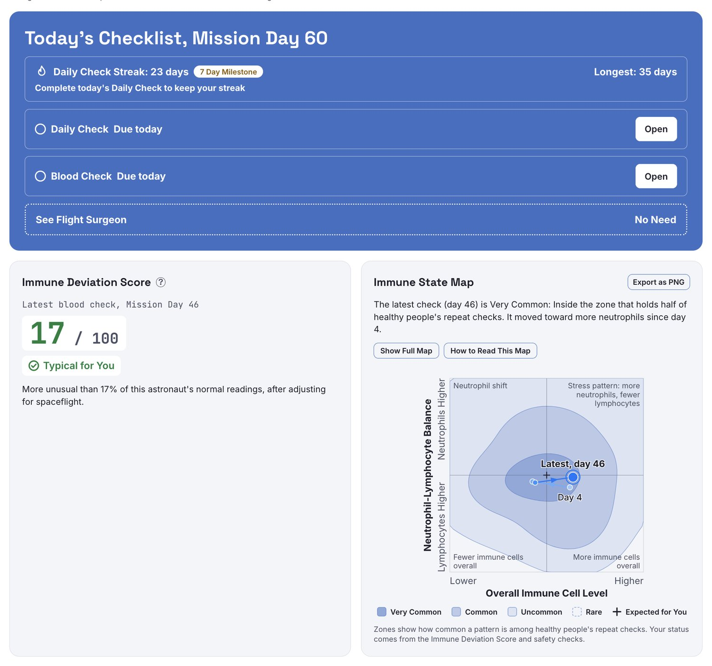
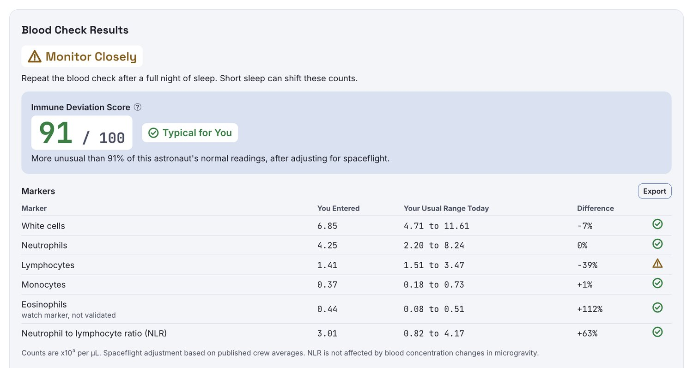
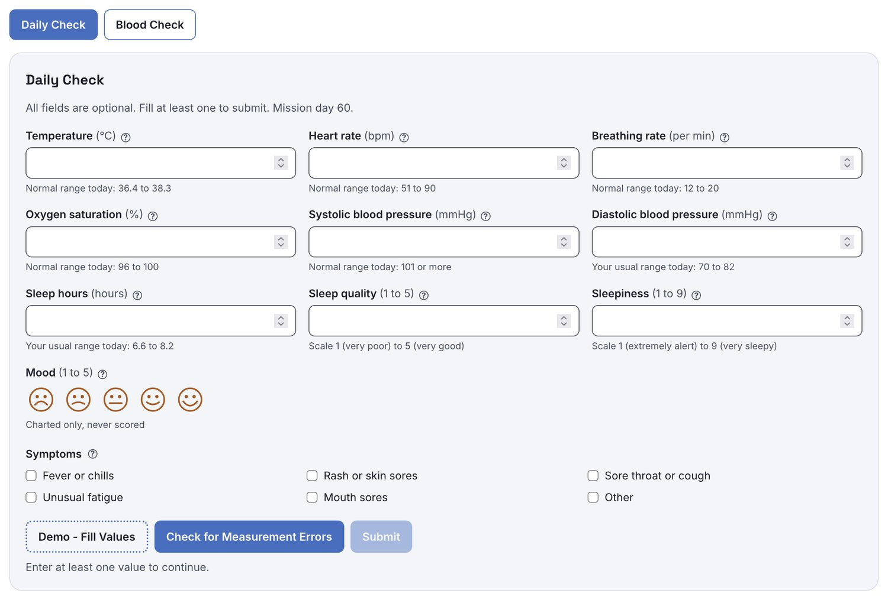
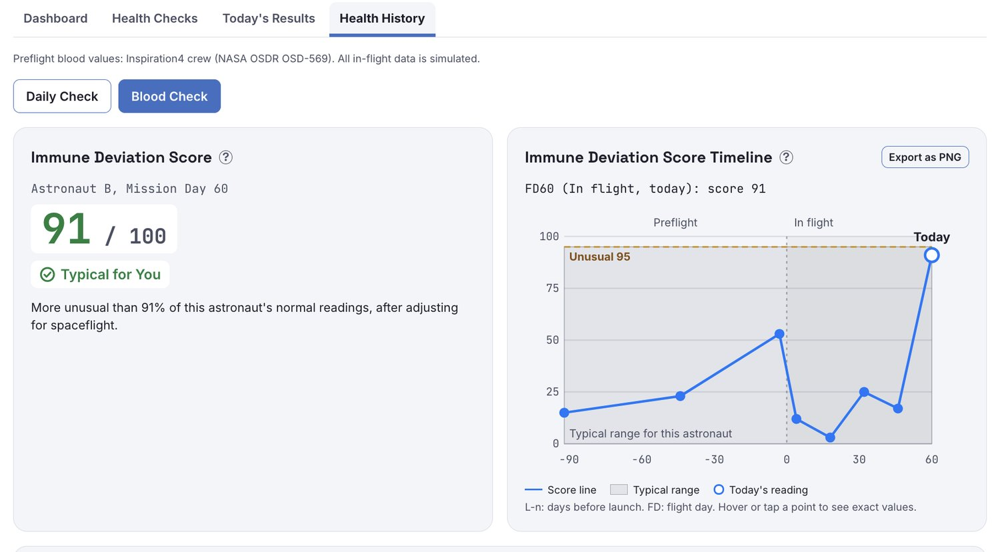
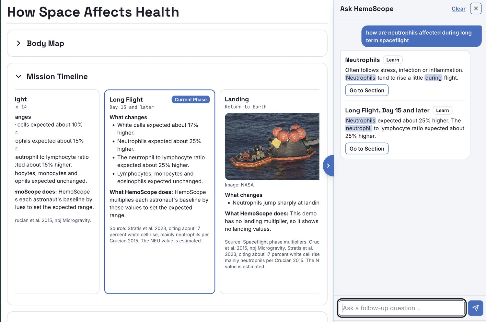
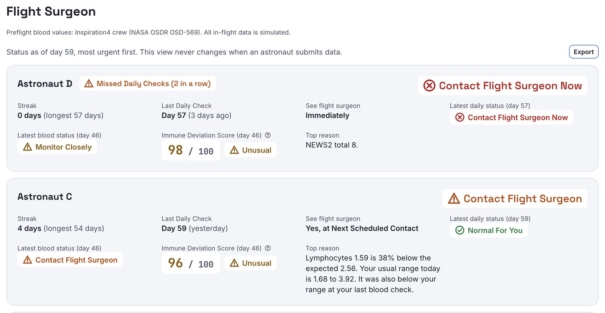
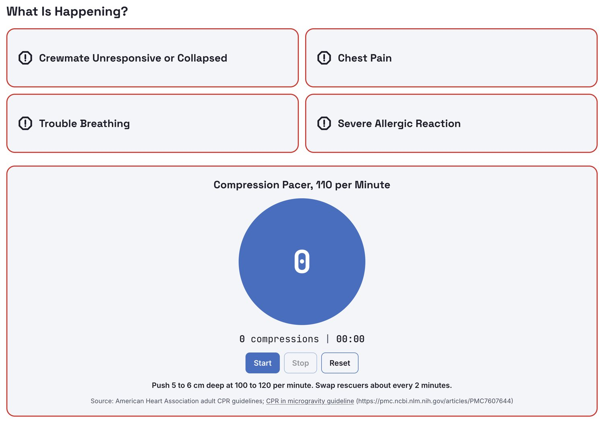
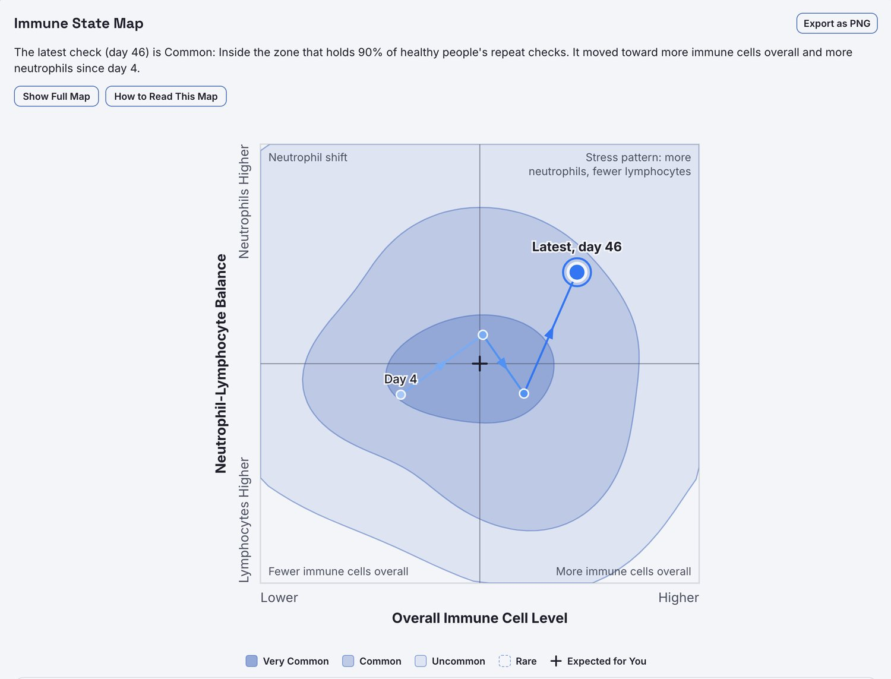
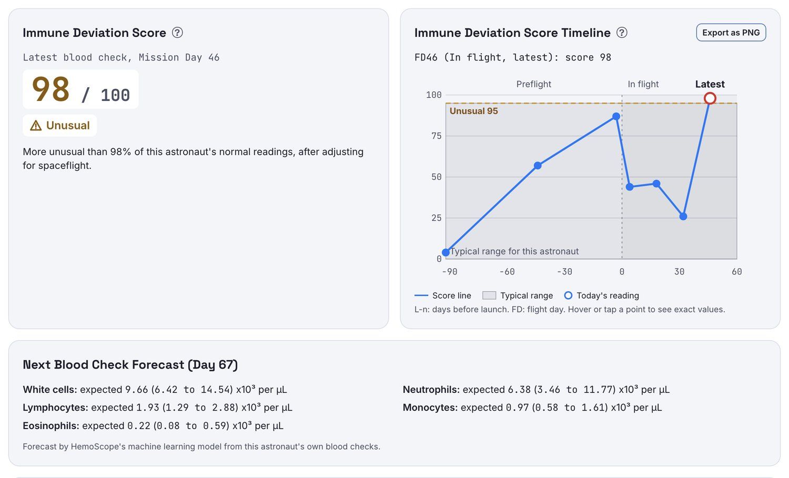

Spaceflight-aware. Teaches astronauts. Runs fully offline.

Radiation, altered gravity and isolation shift immune cells, bones and the heart.
On a Mars mission, a radio reply takes up to 22 minutes. Crews must notice and act on their own.
Is this unusual for this astronaut, and what should they do next?
Lymphocytes over a mission, one astronaut (illustration)

Five levels, from Normal For You to Contact Flight Surgeon Now.
Every status lists the values that moved and what to do next.
An immune state map and a next-check forecast.
Everything runs on the device. No internet needed.

Enter vitals and a blood count, then check for measurement errors.

Health History tracks every check and the Immune Deviation Score over the mission.

Lessons and an offline search explain every number.

Every astronaut on one screen, most urgent first, with the top reason.

One tap from any screen: guides written for microgravity and a CPR pacer.
4 civilian astronauts, 7 time points before and after flight. Real preflight baselines for the demo crew, and a real-world test of the map.
From 120 healthy adults. They train and test both models, with 36 people held out, and show how much each marker normally varies.
Biological variation, spaceflight studies, NEWS2 and CTCAE v5 set the expected ranges and safety limits.
PCA and a Gaussian mixture learn where 993 healthy blood checks fall, then draw each astronaut’s mission as a path.

A Kalman filter for each marker, with parameters learned from 84 people and validated on 36 it never saw.

AI disclosure: Claude (Anthropic) was used as a coding and writing assistant. All data, methods and design choices were made by the team, and all AI-assisted code was reviewed and tested. HemoScope itself uses no generative AI.